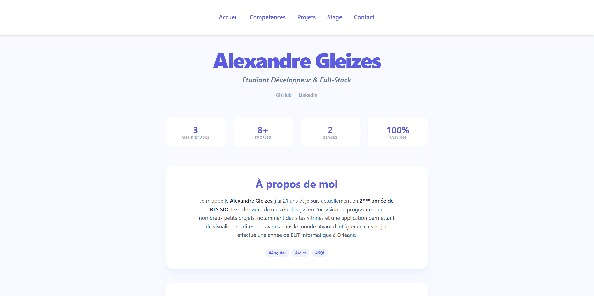
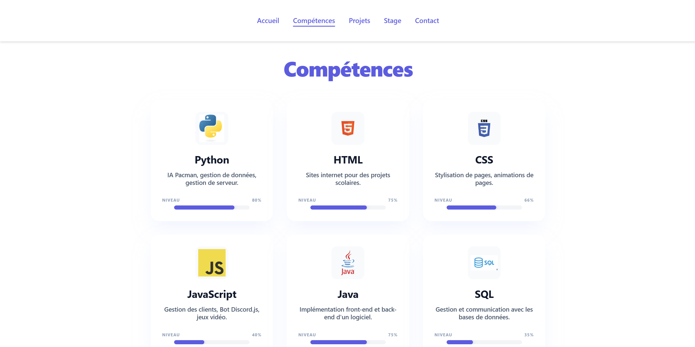
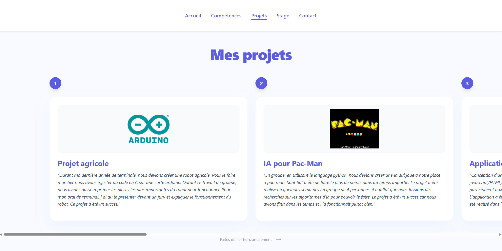

Stage : BNP Paribas (Angular)

Apprentissage du Framework Angular
Au cours de ce stage de deuxième année, ma mission principale a été l'immersion dans l'écosystème Angular. J'ai appris à structurer une application en composants, à gérer la navigation via le Router et à utiliser les Services pour la communication avec les API de la banque. Cette approche modulaire m'a permis de développer des interfaces robustes et maintenables.

Immersion Professionnelle et Agilité
Plus qu'un simple projet technique, ce stage a été une école de la vie en entreprise. En participant activement aux réunions d'équipe et aux daily meetings, j'ai compris l'importance de la communication fluide entre les développeurs. J'ai pu observer de près comment les exigences métier se transforment en fonctionnalités concrètes sur l'application bancaire.

Réalisation de projets concrets
J'ai mis en pratique mes connaissances en réalisant plusieurs modules au sein du site web de la banque. L'enjeu était de respecter scrupuleusement la charte graphique et les contraintes de sécurité strictes de BNP Paribas. Ce travail m'a sensibilisé à l'importance de l'expérience utilisateur (UX) et de l'accessibilité dans le secteur financier.
Facilités et difficultés rencontrées
Développement Angular
La puissance de la CLI d'Angular pour générer rapidement des composants.
La gestion du Data-Binding qui simplifie les mises à jour de l'interface.
Maîtriser la courbe d'apprentissage de TypeScript et de RxJS.
Comprendre le cycle de vie des composants (ngOnInit, etc.) pour éviter les fuites de mémoire.
Contexte Entreprise
Accès à une documentation interne très complète.
Mentorat efficace par des développeurs seniors de l'équipe.
Compréhension rapide de la hiérarchie et des flux de travail.
S'adapter à des processus de validation rigoureux avant chaque mise en production.
Apprendre les normes de sécurité spécifiques au domaine bancaire.